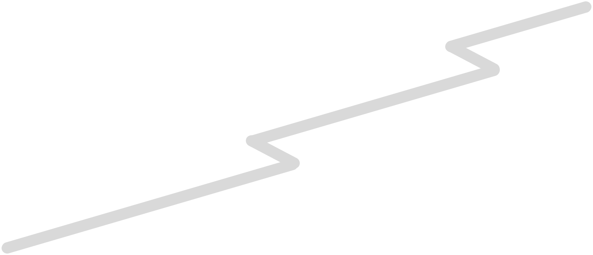
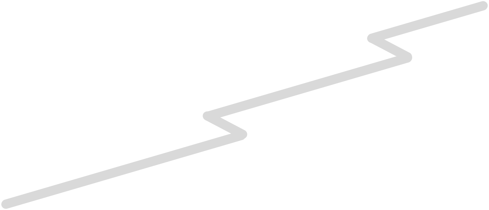

integrate programs on the fly
Select, choose, and debug routines on the fly with the logging framework all from your browser, allowing for a fast and easy work routine.
...all within 15mb. including packages.
“Site,” the frontend dashboard of the bot is hosted within 15mb, making a super lightweight and highly versatile library, perfect for customization - think of the backend like ReactJS, without the mass amount of packages required. This program allows for a user to communicate effectively with the robot without downloading any software, except for their web browser (which if you're using this website right now, you probably have). Start the server, and get started within seconds.
connect with literally any program.
Whether it be Tensorflow, a website, or even Minecraft, a connection is possible with a custom protocol that allows for fast and efficient communication over WebSocket.
 
